Project 3 Part A: [Auto]Stitching Photo Mosaics
This project is all about stitching together many photographs to create larger composite images. The project involves shooting photographs with projective transformations, recovering homographies between image pairs, warping images for alignment, and blending them into seamless mosaics.
The project is divided into four main tasks:
- A.1: Shoot the Pictures - Capture photographs with projective transformations
- A.2: Recover Homographies - Compute transformation matrices between image pairs
- A.3: Warp the Images - Implement image warping with different interpolation methods
- A.4: Blend the Images into a Mosaic - Create seamless composite images
Shoot the Pictures
Shoot two or more photographs so that the transforms between them are projective (a.k.a. perspective). The most common way is to fix the center of projection (COP) and rotate your camera while capturing photos.
Deliverables:
Show at least 2 sets of images with projective transformations between them (fixed center of projection, rotate camera).
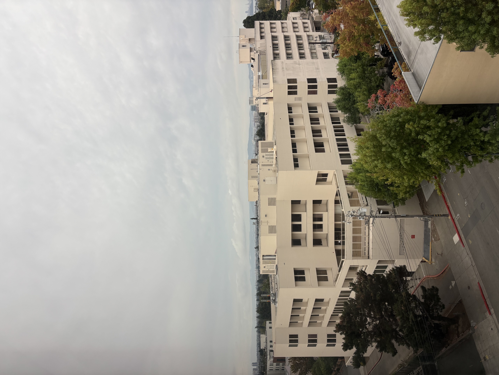
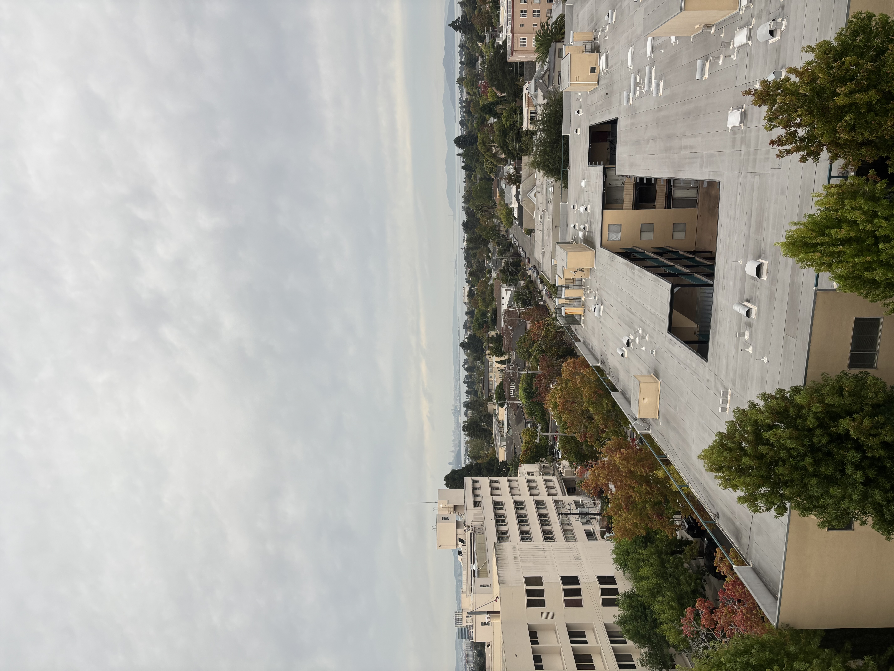
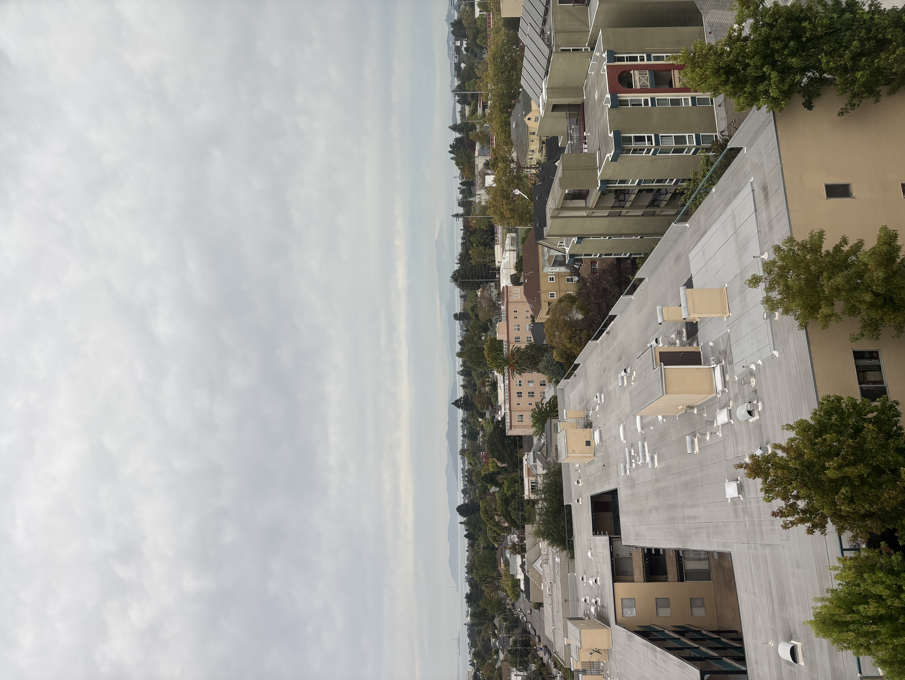
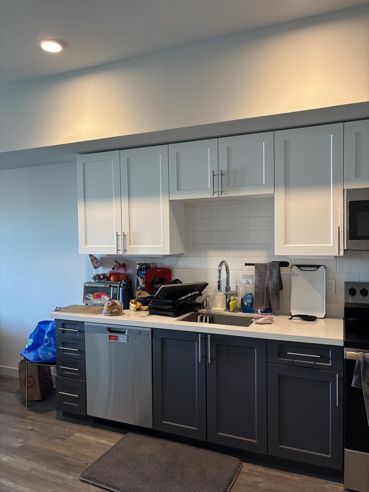
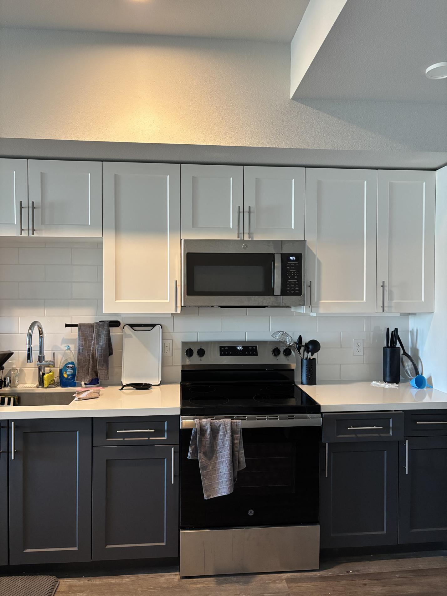
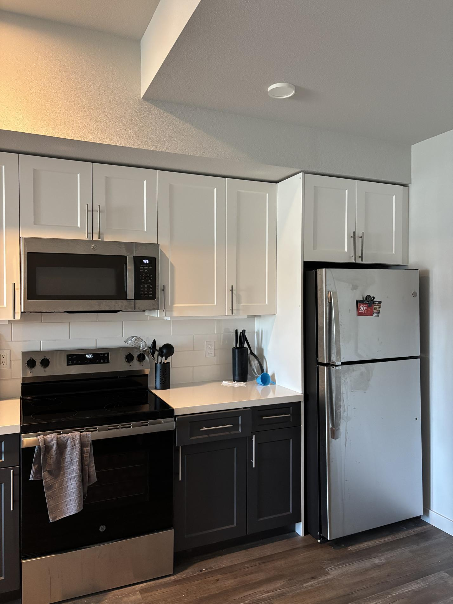
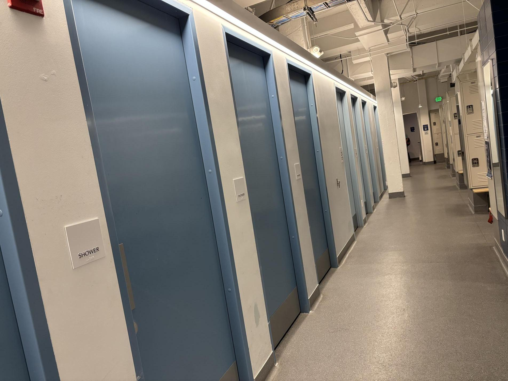
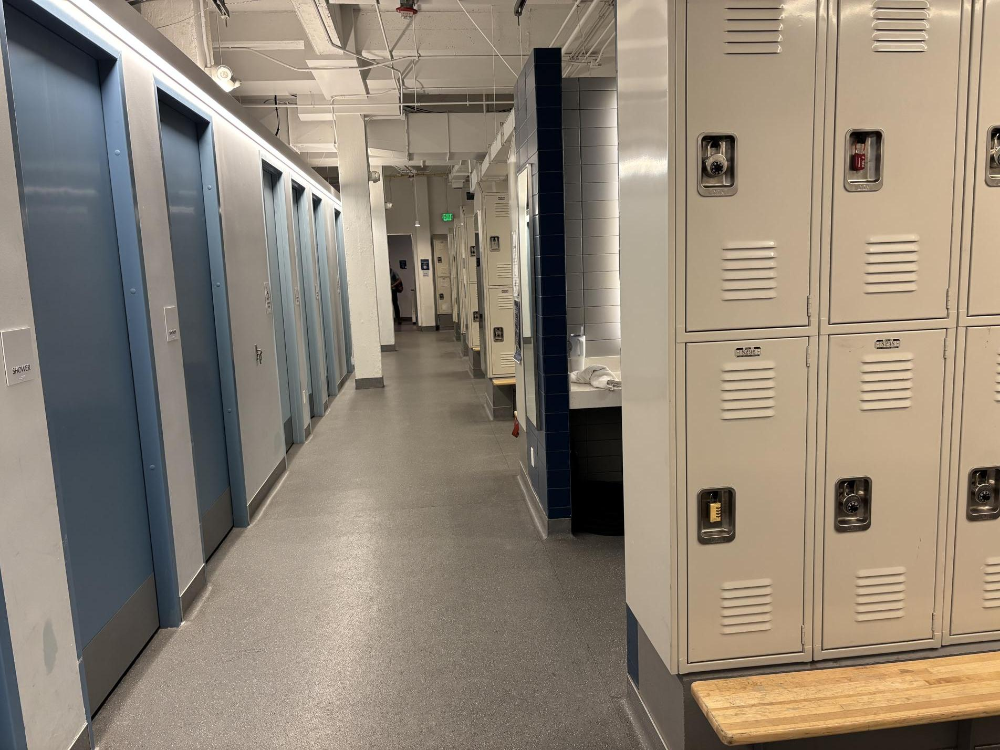
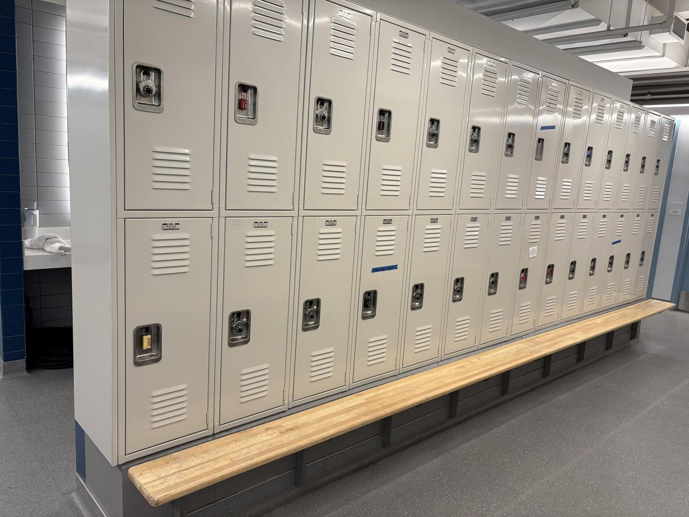
Recover Homographies
Before you can warp your images into alignment, you need to recover the parameters of the transformation between each pair of images. In our case, the transformation is a homography: p'=Hp, where H is a 3x3 matrix with 8 degrees of freedom.
Display system of equations
For one correspondence pair (x,y) → (u,v), the system of equations is:
Where:
- a₁ᵀ = [x y 1 0 0 0 -ux -uy]
- a₂ᵀ = [0 0 0 x y 1 -vx -vy]
- b₁ = u
- b₂ = v
This gives us 2 equations for 8 unknowns. With n correspondence pairs, we get 2n equations, forming an overdetermined system that can be solved using least squares when n ≥ 4.
This is exactly what we discussed in class. The total system of equations can be found below in python code.
Implement computeH(im1_pts, im2_pts) function
Write a function of the form:
H = computeH(im1_pts, im2_pts)where im1_pts and im2_pts are n-by-2 matrices holding the (x,y) locations of n point correspondences from the two images and H is the recovered 3x3 homography matrix.
Implementation: The function constructs the matrix A (2n×8) and vector b (2n×1) as shown above, then uses least squares to solve Ah=b. The solution h contains the 8 homography parameters, which are reshaped into the 3×3 matrix H.
# Construct matrix A using numpy indexing
A[0::2, 0:3] = np.stack([x, y, np.ones(n)], axis=1) # First row of each pair
A[1::2, 3:6] = np.stack([x, y, np.ones(n)], axis=1) # Second row of each pair
A[0::2, 6] = -u * x # -ux terms
A[0::2, 7] = -u * y # -uy terms
A[1::2, 6] = -v * x # -vx terms
A[1::2, 7] = -v * y # -vy terms
# Construct vector b
b[0::2] = u # u coordinates
b[1::2] = v # v coordinates
# Solve using least squares
h, residuals, rank, s = np.linalg.lstsq(A, b, rcond=None)Show correspondences visualized on the images
The 8 correspondences (manually selected with ginput) are displayed as red dots on the images for the first and second image as an example.
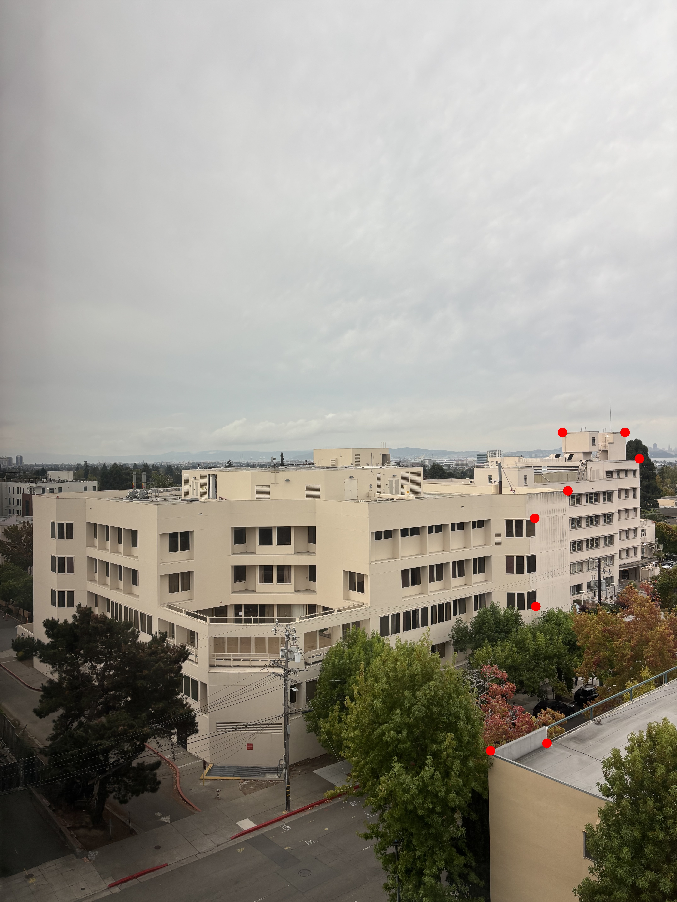
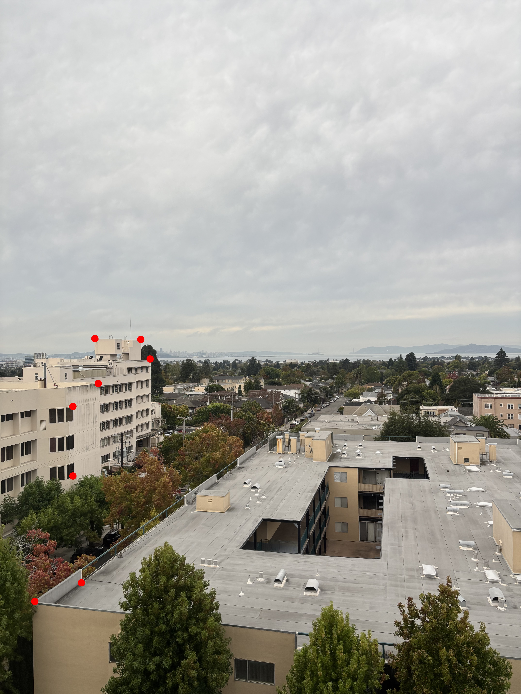
Show recovered homography matrix
The computed 3x3 homography matrix H for the first and second example images is shown below.
H = [[ 2.11756002e+00 -1.50286932e-02 -5.99626144e+03]
[ 7.69110234e-01 1.90987889e+00 -2.61261782e+03]
[ 2.63190503e-04 -5.76557477e-06 1.00000000e+00]]Warp the Images
Implement warpImageNearestNeighbor(im, H) and warpImageBilinear(im, H) using inverse warping
The two different interpolation methods differ in how they pick the pixel values for the output image. Nearest Neighbor Interpolation rounds the coordinates to the nearest pixel value, while Bilinear Interpolation uses a weighted average of the four neighboring pixels.
In code, this difference is between these lines:
xi = np.rint(x).astype(np.int64)
yi = np.rint(y).astype(np.int64)
flat_out[inbounds, :] = im[yi[inbounds], xi[inbounds], :]
and
x0 = np.floor(x[inbounds]).astype(np.int64)
y0 = np.floor(y[inbounds]).astype(np.int64)
x1 = np.minimum(x0 + 1, w_in - 1)
y1 = np.minimum(y0 + 1, h_in - 1)
wa = (x1 - x[inbounds]) * (y1 - y[inbounds])
wb = (x[inbounds] - x0) * (y1 - y[inbounds])
wc = (x1 - x[inbounds]) * (y[inbounds] - y0)
wd = (x[inbounds] - x0) * (y[inbounds] - y0)
flat_out[inbounds, :] = (wa[:, np.newaxis] * im[y0, x0, :] +
wb[:, np.newaxis] * im[y0, x1, :] +
wc[:, np.newaxis] * im[y1, x0, :] +
wd[:, np.newaxis] * im[y1, x1, :])
Apply to 2+ images for rectification
I have taken two pictures of rectangular objects and applied the homography to the images to rectify them.
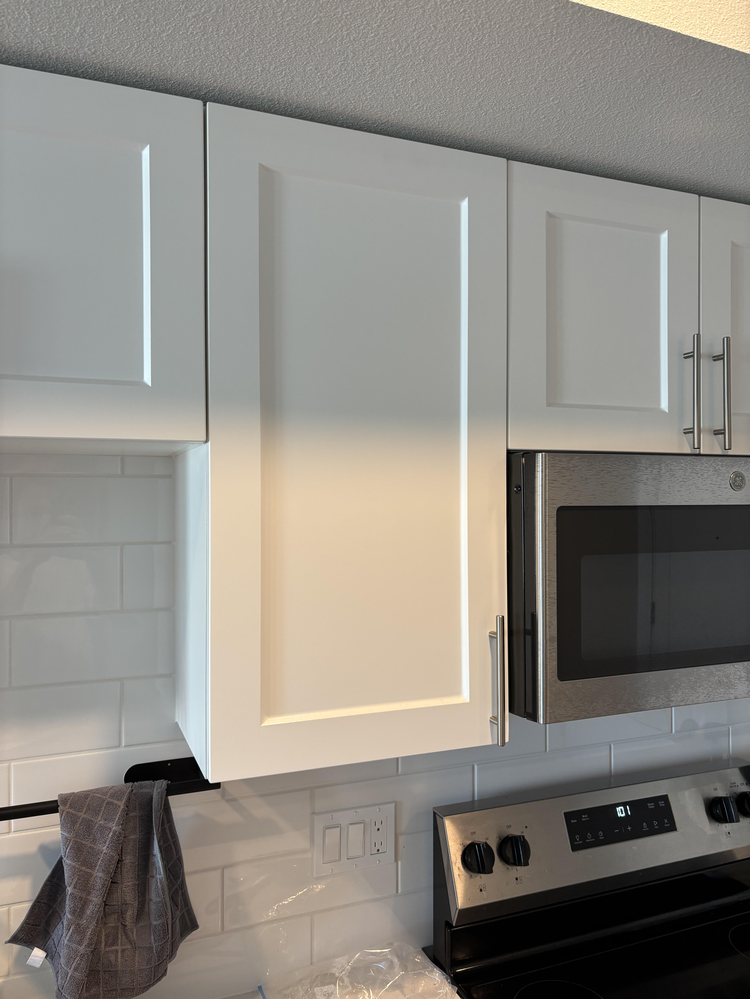
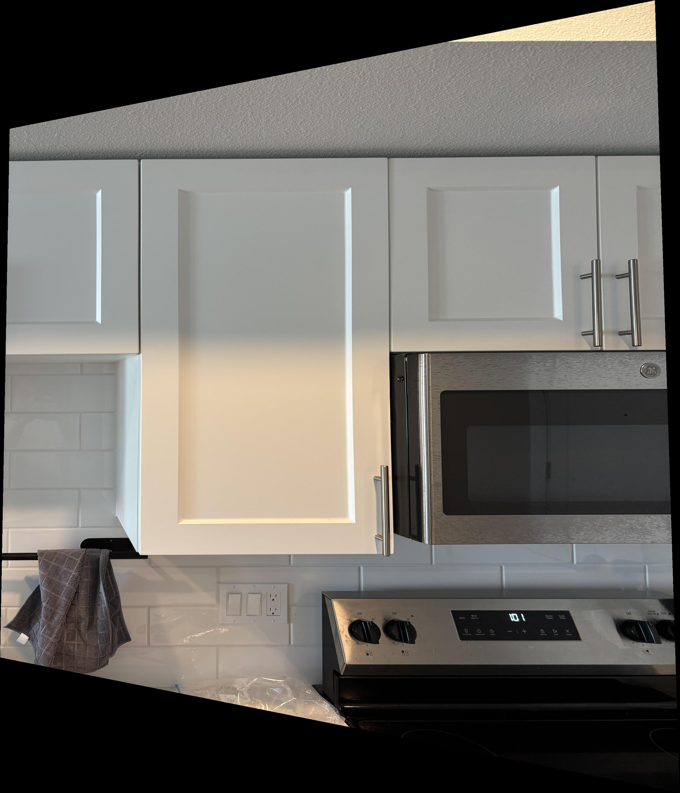
Show comparisons between interpolation methods


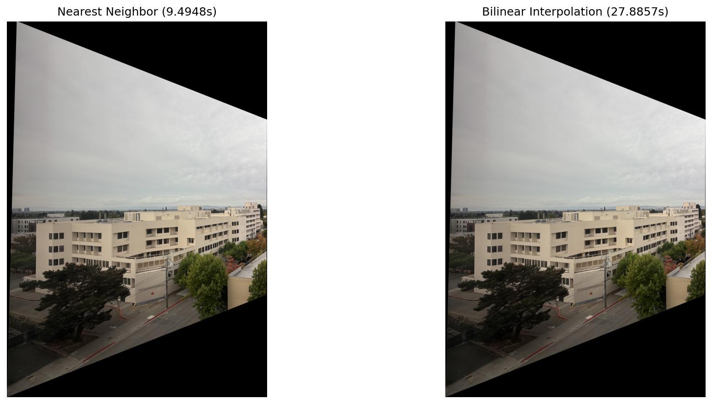
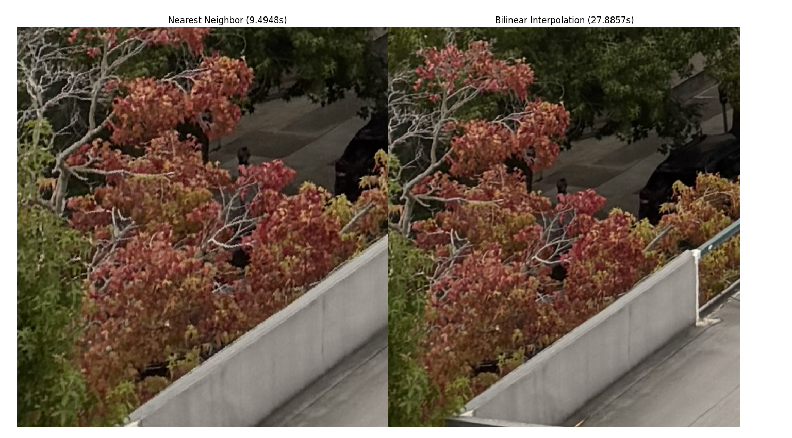
Discuss trade-offs between speed and quality
Nearest neighbor interpolation is significantly faster than bilinear interpolation, as shown by the timing results above (9.49s vs. 27.88s, i.e. nearest neighbor is 2.94x faster). On a large scale, both methods produce similar-looking results, and the differences may not be immediately obvious. However, when you zoom in (e.g. on the twigs and rails in the zoomed-in comparison), the quality improvement from bilinear interpolation becomes quite noticeable: edges are smoother and there are fewer blocky artifacts compared to nearest neighbor. This makes bilinear interpolation preferable when image quality is important, especially in areas with fine details, while nearest neighbor is a good choice when speed is the priority.
Blend the Images into a Mosaic
Here are the three source images used for creating the mosaic:
The final blended mosaic combining all three images:

Blending Process
The images were blended using homography transformations and weighted averaging (0.5 weight for each image) in overlapping regions.
Kitchen Mosaic Example
Here's another example using kitchen images to demonstrate the same blending technique:
The final blended kitchen mosaic:
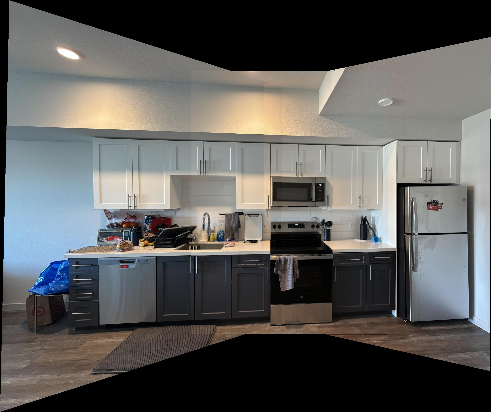
Locker Room Mosaic Example
Here's another example using locker room images to demonstrate the same blending technique:
The final blended locker room mosaic:
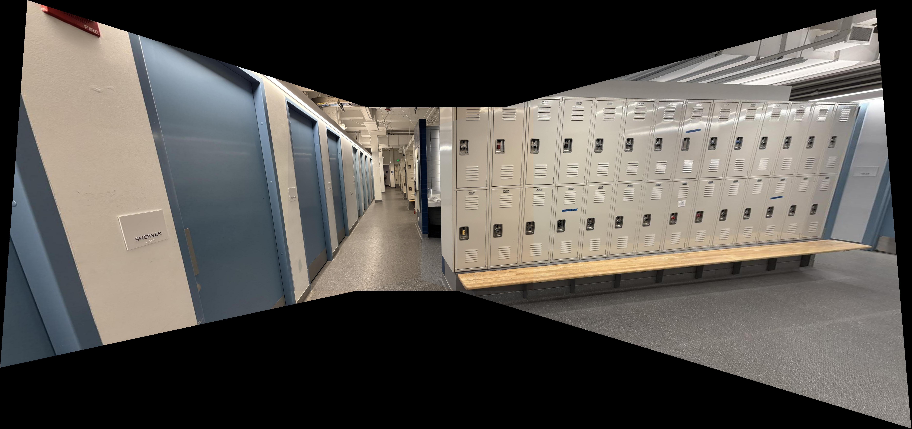
Project 3 Part B: FEATURE MATCHING for AUTOSTITCHING
The goal of this project is to create a system for automatically stitching images into a mosaic. A secondary goal is to learn how to read and implement a research paper. The project will consist of the following steps:
- B.1: Detecting corner features in an image (20 pts)
- B.2: Extracting a Feature Descriptor for each feature point (20 pts)
- B.3: Matching these feature descriptors between two images (20 pts)
- B.4: Use a robust method (RANSAC) to compute and apply homographies (40 pts)
Feature Detection: Harris Corners & ANMS
1. Harris Corner Detection Results
All Harris corners detected (over 1500 per image) are shown overlaid
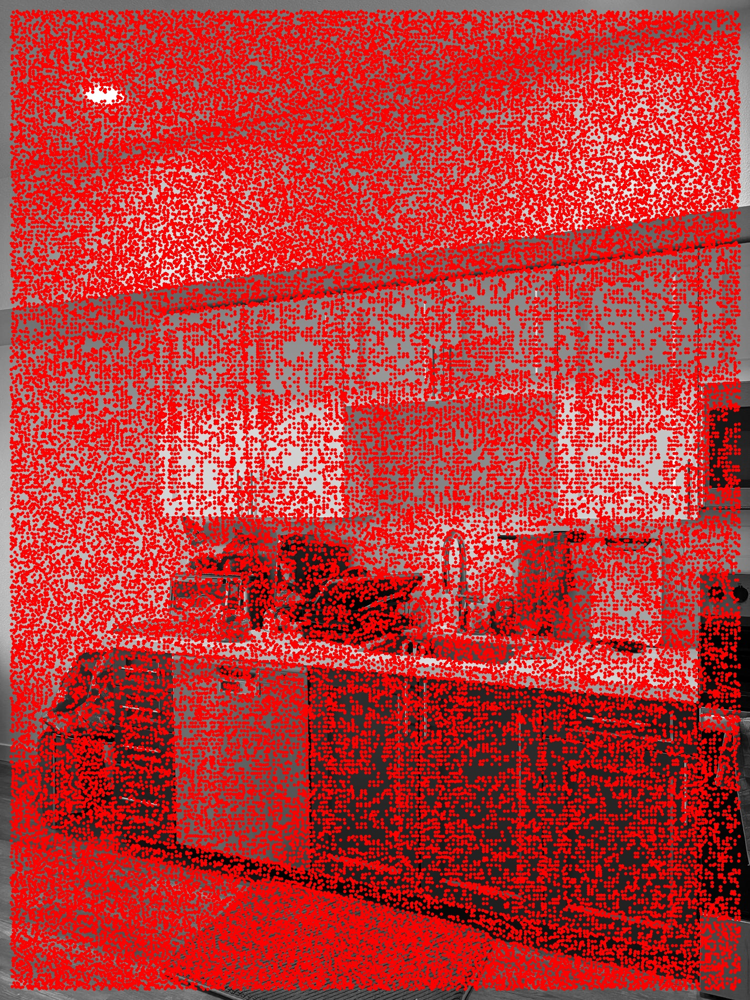
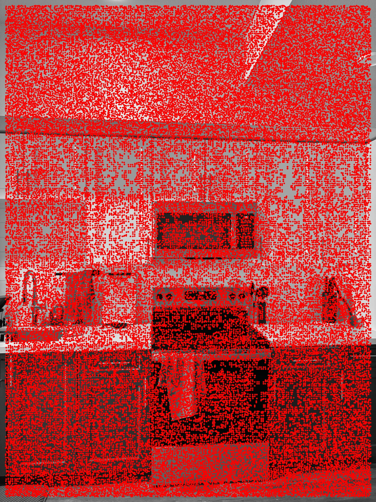
2. ANMS-filtered Harris Corners
ANMS (Adaptive Non-Maximum Suppression) selects the top 500 spatially distributed corners, which avoids clustering and improves feature matching for downstream tasks.
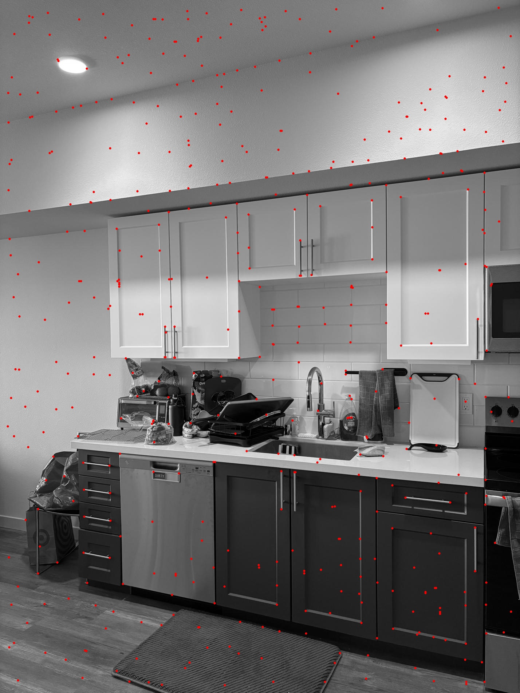
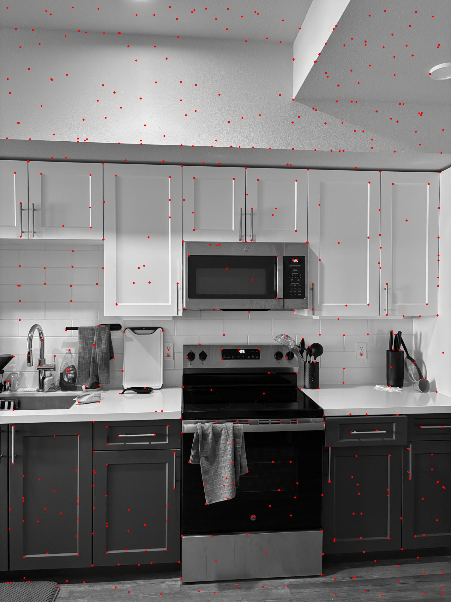
Feature Descriptor Extraction
Kitchen Left descriptors
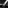
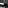
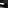
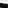
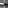
Kitchen Middle descriptors
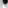
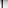
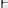
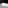
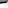
Feature Matching
Matched Features Between Kitchen Images
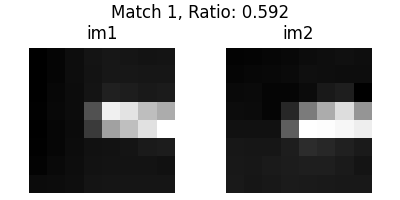
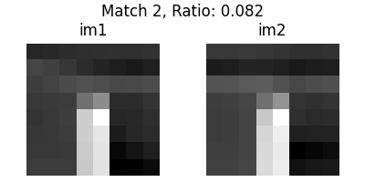
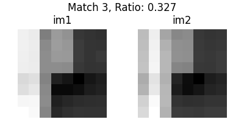
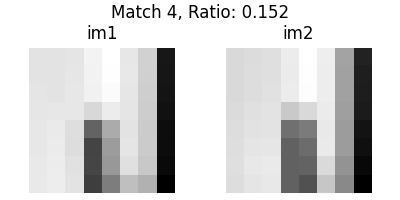
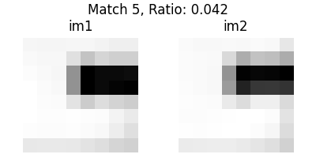
Matched Points Visualization
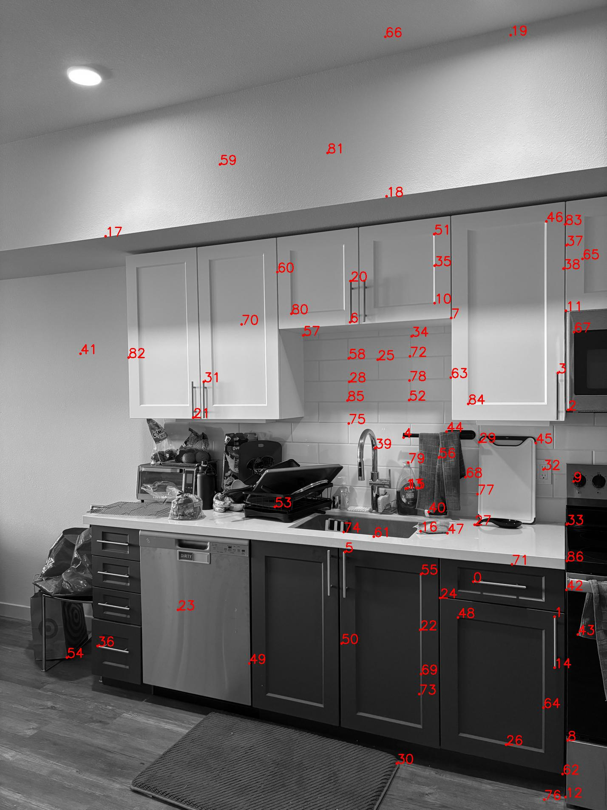
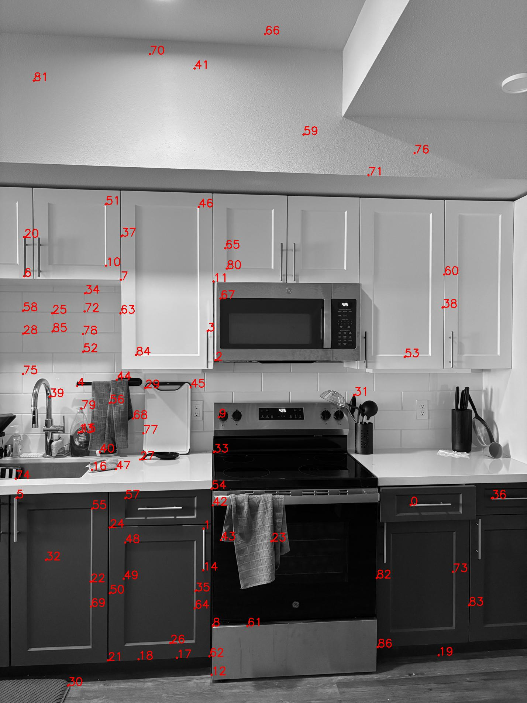
As one can see the first match with the highest ratio (horizontal handle) is on both images, but the actual features do not match as it is a different handle (even though it is the only horizontal handle in both images). The second match (vertical handle) is on both images, and the features match. This ocasional mismatch is the reason for a RANSAC approach to cross-check the matches.
RANSAC for Robust Homography
Below, the three scenes are stitched using RANSAC homography. The first scene is the window scene, the second scene is the kitchen scene, and the third scene is the locker scene. For each scene, the manually stitched panorama is also shown for comparison. As one can see, the automatic stitching is much better than the manual stitching.
Autostiched Image Mosaics Using RANSAC Homography (Window)
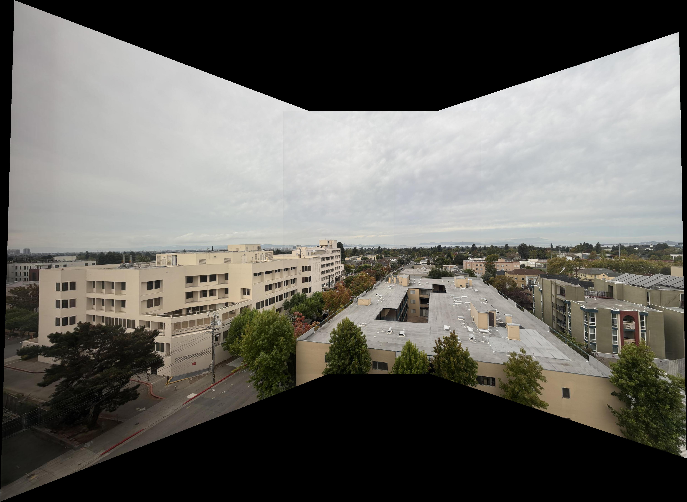
Autostiched Image Mosaics Using RANSAC Homography (Kitchen)
Autostiched Image Mosaics Using RANSAC Homography (Locker)
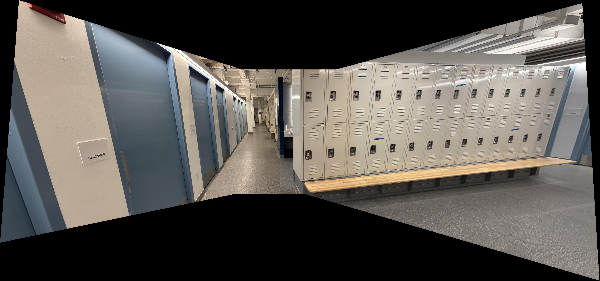